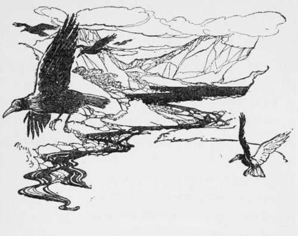

Hare-Hunting. Part 5
Description
This section is from the book "Hunting: A Manual of Fox, Hare, Stag & Otter Hunting", by J. Otho Paget. Also available from Amazon: Hunting: A Manual of Fox, Hare, Stag & Otter Hunting.
Hare-Hunting. Part 5
Experience only will teach you the most likely places to find a hare, and then if you go into another country all your preconceived ideas will be at fault. It is the nature of the hare to protect herself from the wind as much as possible, and she generally chooses a sheltered spot; but this is not an invariable rule, and you will sometimes find her lying in the most exposed places. There are certain parts of certain fields in which a hare may generally be found from whatever quarter the wind blows, but these, I think, are generally does or leverets—the old jack takes care to lie in a snug place where he is least likely to be disturbed. Ground that has been manured or newly ploughed it is waste of time drawing. They are very fond of young plantations with plenty of grass in them, but they seldom lie in thick coverts. When there has been no rain or dew for several days, the hedgerows are likely places, but they will not lie where the drip from tree or thorn falls on them.
Hunting a hare with small foot-beagles may be carried on in the same style as a foxhunt, and, to my mind, the two sports closely resemble each other. You must allow no dwelling on the line, for though the hare, unlike the fox, may wait for you, she will be resting herself and gaining fresh strength every moment you allow her to lie down. Always let your hounds make their own cast before you think of assisting them, and consider in your mind the reason for their checking. Do not be afraid of casting forward, as if she has gone on you save time, and if she has turned back she will probably be lying down. With a good pack you will have very little to do unless there is a very bad scent, but if they are out of blood you will find they will run well and hunt well, until the hare is getting beat and her scent is failing. At that critical moment they will dwell and potter on the line, never making any headway and getting slacker every minute. This is the time when your ability as a huntsman is put to the test, and you must do all in your power to get them forward. Your eye must be everywhere at once, so that you observe each hound's movements, every moving object in the surrounding country, and are ever on the alert to view the beaten hare.
The most frequent cause of failure in the pursuit of a hare is changing. Just when the one you are hunting is getting tired, up jumps another fresh from her form, and away go the pack in full view. There is very little hope of stopping them, and when you do succeed the chances are you will not be able to recover your original quarry, either that the lapse of time has allowed the scent to disappear or puss stole away when her enemies' backs were turned. It is a very common occurrence for a hunted hare to squat alongside of another, and, of course, the fresh one is certain to get up first. There is not the slightest doubt this is done intentionally, and, I believe, it is a regular custom—an instinct bred by experience—to defeat the dog species—at least the fresh hare always appears to take up her burden cheerfully, as if it were merely the performance of an ordinary duty. When a hare has run for about a mile and still finds she is pursued, she generally visits every field and form in which some of her friends reside, so that there will soon be two or three afoot where you thought they were very scarce. Your best chance of success, both in killing and having a good run, is to force her out of her country, and then she will probably go quite straight. Hares will run straight sometimes even when they have not lost themselves, but this sort is like the travelling fox—hard to find.
On strictly preserved estates the hare is a semi-tame animal, affording sport neither to the gun nor the hound ; but the wild hare that lives in a grazing* district of small holdings, where every farmer keeps a sheep-dog and where ' velveteens' is unknown, is a quarry worthy of being hunted. The sheep-dog will speedily snap up the weak, and none but the strong will survive. In this way you hunt an animal that is really wild, and you also find it in excellent condition.
There is no sport in shooting a hare—or I might say more than one—and no skill is required, so that it is always a wonder to me why they should be preserved in such large numbers on several estates. Where there are a brace at least in every field, it is a farce trying to hunt them with foot-beagles, and you will very seldom get a run. If you can get the consent of the occupiers to hunt over a country where there are no hares at all, you can very soon stock it sufficiently well for your purpose. Buy your hares in the spring, and ask the farmers when you turn them down not to shoot them in the summer, then by the following winter there will be plenty to hunt. You ought always to make it a rule when you kill to send a hare to the farmer on whose land you find.
If foot-beagles kill a hare I think they deserve to have it, and dead ones are not very expensive to buy. Harriers kill much oftener, and the entrails may be sufficient to satisfy their appetite for blood. Many people think it is unnecessary to give hounds the body, but I am quite certain it makes them work better, and that they are all the keener for it.
I have said that in most instances it is advisable to make a forward cast, but I do not wish to infer that the hare generally goes on. It is her usual custom to turn short one way or the other, run her foil and try various dodges to evade hounds; but by casting forward you will hit her line where she has gone on again, and the cry of beagles behind is nearly certain to make her complete the double. Unless you are running directly behind the pack they will be quite ready at a check to try back, and you will get a pretty good hint from them of what the hare has done.
When a hare that is being hunted runs either a road or a path, she will, in nine cases out of ten, turn back and run her foil before she makes off sideways. If you see a trustworthy old hound running back on the line he has come, do not chide him for hunting the heelway until you are satisfied he is wrong.
In making a cast the huntsman should regulate his pace according to the quality of the scent, but he should never go so fast that the hounds cannot have their heads down. By hurrying them on and a whip cracking behind them, they are quite likely to cross the line without discovering it. The huntsman should make his cast with his pack trying in front of him, and not dragging on at his heels.
If you happen to have a pack which, through mismanagement and other causes, have become very wild, your only plan is to make them hunt. Never give them a view, allow no halloaing, and do not assist them at a check until they are quite at a loss. If there is every appearance of being a good scent, give the hare some law and let them hunt up to her. In fact, wild or unsteady hounds should be made to hunt out the coldest scent over plough and grass alike as long as they can own a line. Keep them at it all day, and do not bother about a kill on the first occasion—you will be able to accomplish that the next time you take them out, when they will be nearly cured of unsteadiness.
It is a very difficult matter to distinguish a run hare in dry weather—the only sign then is a thin look, and when very tired, an arched back. You must not forget that a good hare will make a last effort when quite beat, and will spurt for two hundred yards as fast as when she started, though at the end of that distance she may not be able to move. The young huntsman therefore need not always despair, because the hare he had thought tired leaves his pack at every stride, after jumping up at their feet.
Never give up a tired hare whilst daylight lasts. In going to a halloa, always find out the exact spot where she was last seen, and do not allow yourself to be misled because your informant thinks she went in a certain direction. Those who know a little about the habits of the hare are least to be trusted: they think because under ordinary conditions she pursues a particular course, that she will do the same when hunted,—for this reason you must not be influenced by keepers. Always give an attentive ear to all information, but put your trust in your hounds and you will not be disappointed.
I do not think a young man can have a better education for fox-hunting than to begin with a pack of foot-beagles. It not only teaches him the principles of hunting, but gives him a good idea of getting the shortest way to hounds. The few hints I have given may, I hope, be of service to the beginner, but experience aided by careful observation is the best tutor a man can have.
My little pack are only twelve and a half inches, but they have this season killed thirteen brace of hares out of fifty hunting days; so that when I plead for small hounds in a grass country, you will see that I do not ask you to undertake an impossible task.

Continue to: